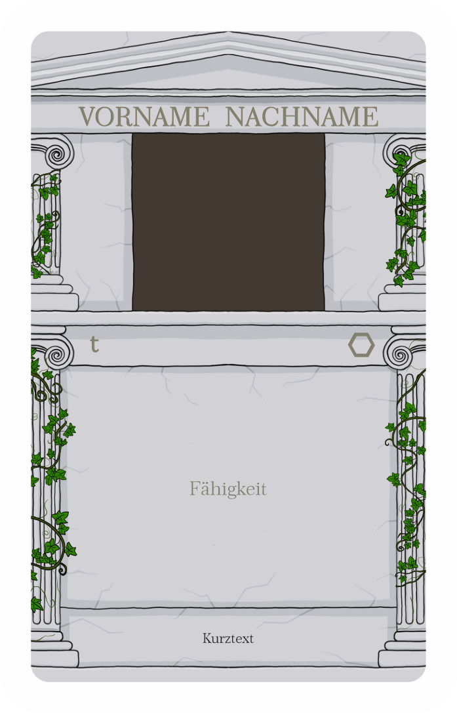
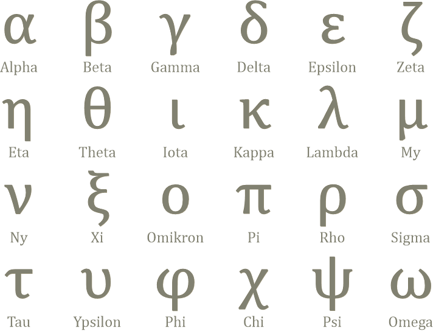
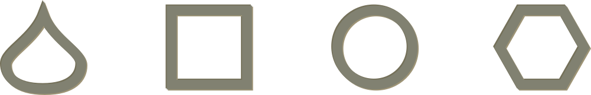
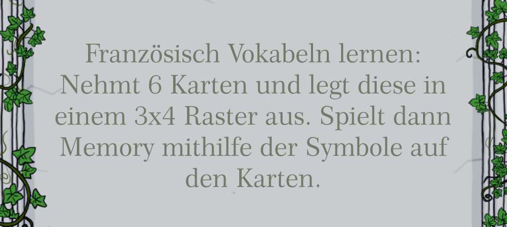
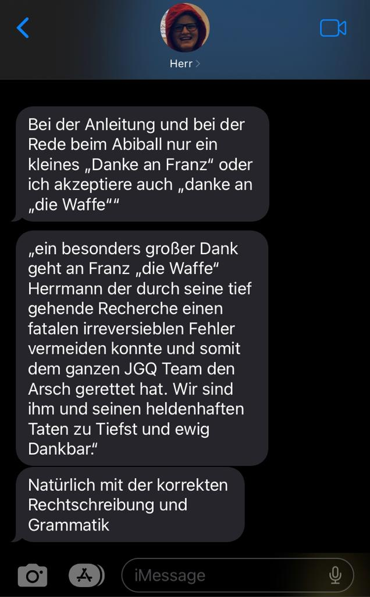

Willkommen auf der offiziellen Internetseite des Jahrgangsquartett™
Inhaltsverzeichnis
1. Inhalt des Kartenspiels
97 Spielkarten, darunter
71 Schülerkarten
26 Lehrerkarten
2 Sonstige Karten:
ein
wundervolles Deckblatt + der QR-Code zu dieser Website
ganz viel Liebe
2. Schülerkarten
2.1. Layout

Jede Schülerkarte zeigt einen Schüler und dessen Werte in den verschiedenen Kategorien.
Die Werte
für die einzelnen Kategorien wurden hierbei durch Umfragen innerhalb des Jahrgangs ermittelt und von
der Redaktion ausgewertet, um das bestmöglichste Spielerlebnis zu garantieren.
2.2. Skalawerte

Werte, die auf einer Skala abgebildet sind, werden im Folgenden „Skalawerte“ genannt. Diese nehmen Werte von 0 bis 10 an, welche jeweils durch einen Halbkreis dargestellt sind. Sollte dieser Bereich aus unerfindlichen Gründen überschritten werden, wird dies durch weitere Halbkreise dargestellt.

2.3. Zahlenwerte

Werte, die genaue Zahlen annehmen, werden im Folgenden „Zahlenwerte“ genannt. Diese haben keinen festgelegten Bereich. Die kriminelle Energie wird dabei um eine Erklärung ergänzt.
3. Lehrerkarten
3.1. Layout
Jede Lehrerkarte zeigt einen Lehrer und dessen Fähigkeit.
Die Fähigkeiten der Lehrer wurden in Zusammenarbeit der Redaktion mit dem Rest des Jahrgangs
erarbeitet und konkretisiert.
3.2. Fähigkeiten
Lehrerkarten, deren Fähigkeit sich auf Werte bezieht, beeinflussen dabei immer die nächste Schülerkarte.
So kann es also auch zur Verbindung mehrerer Lehrerfähigkeiten
kommen. Lehrerkarte und Schülerkarte werden in diesem Fall gemeinsam ausgespielt.
Lehrerkarten, deren Fähigkeit sich nicht auf Werte bezieht, werden separat ausgespielt,
gegebenenfalls auch ohne den Austausch von Karten. Die Lehrerkarte wird in diesem Fall allein
ausgespielt.
4. Spielweisen
4.1. Macht doch was ihr wollt
Ehrlicherweise ist es uns eigentlich ziemlich sehr egal, was ihr mit eurem Jahrgangsquartett macht. Nur Verbrennen wäre vielleicht ungünstig… (Dann könntet ihr auch gleich euer Geld anzünden) Jedenfalls gibt es nicht die "einzig wahre" Spielweise. Schon im Kindergarten wurden diese Spiele immer mit unterschiedlichen Regeln gespielt. Falls ihr aber wirklich gar keine Ahnung habt, was ihr mit dem Spiel anfangen sollt, folgen hier ein paar unserer Varianten das Spiel zu spielen. Diskussionen und am besten Streitgespräche unter den Spielern bezüglich der besten Spielweise sind aber strengstens erwünscht.
4.2. Trumpf
| Dauer | dynamisch |
| Spieler | 2 (vielleicht auch mehr, das hat bis jetzt noch niemand getestet) |
| Ziel | alle Karten besitzen |
| Vorbereitung | Karten gleichmäßig und vollständig verteilen(GINI = 0) |
| Beginn | Der Humorvollste beginnt |
| Kartenhandhabung | Oberste der eigenen Karten sichtbar |
| Ablauf | 1. Kategorie wählen 2. Werte vergleichen 3. Stich gewinnen(siehe Tabelle) 4. Gewinner ist als Nächstes dran |
| Ende | - ein Spieler besitzt alle Karten(GINI = 100) - beide Spieler haben keine Lust mehr |
| Trumpfwerte | |||
|---|---|---|---|
| Lehrerliebling | - Höhere Werte | Stil | - Höhere Werte |
| Muttersöhnchen | - Niedrigere Werte | Humor | - Höhere Werte |
| Verpeiltheit | - Niedrigere Werte | Matheskills | - Höhere Werte |
| Fehltage | - Niedrigere Werte | Geschätzter IQ | - Höhere Werte |
| Kriminelle Energie | - Niedrigere Werte |
Die Karten werden zuerst gleichmäßig auf alle Spieler aufgeteilt (bei 97 Spielkarten bleibt halt immer eine übrig, aber naja, die kann ja der erfahrenere Spieler bekommen). Es wird immer mit der obersten Karte vom Stapel gespielt, die Restlichen bleiben verdeckt. Nun fängt der jüngere Spieler an und schlägt eine Kategorie vor, die Trumpf sein soll. Beide Spieler sagen daraufhin die Werte (mit eventuellen Boni von Lehrerkarten), die ihre aufgedeckte Schülerkarte in der jeweiligen Kategorie hat. Derjenige, der in der Kategorie den Trumpf-Wert hat (entsprechend der Tabelle), gewinnt dabei die Runde. Bei Gleichstand werden die Karten in die Mitte gelegt und die nächsten Karten werden in derselben Kategorie verglichen (Stechen). Dabei neu aufgedeckte Lehrerkarten werden wie gewohnt im Spiel eingesetzt. Im weiteren Spielverlauf schlägt immer der Gewinner der vorherigen Runde die neue Kategorie vor. Das Spiel endet, wenn entweder einer keine Karten oder beide keine Lust mehr haben.
Ihr könnt natürlich auch wieder machen, was ihr wollt. Beispielsweise ohne Lehrerkarten oder auch mit umgedrehter Wertung der Trumpf-Werte spielen.
4.3. Quartett
| Dauer | unbestimmt, vermutlich seeehr lange |
| Spieler | meistens 3 |
| Ziel | möglichst viele Quartette ablegen |
| Vorbereitung | Alle Karten auf alle Spieler verteilen |
| Beginn | Der Stilvollste beginnt |
| Kartenhandhabung | Eigene Karten sichtbar |
| Ablauf | 1. Karten von anderem Spieler anhand der Buchstaben und Formen erfragen 2. Eventuelle Quartette ablegen oder nächster Spieler ist am Zug |
| Ende | - ein Spieler hat keine Karten mehr - alle Spieler wollen nicht mehr |
Zu Beginn des Spiels werden alle 97 Karten gemischt und im Uhrzeigersinn auf alle Mitspieler verteilt. Ziel des Spiels ist es, möglichst viele Quartette vor sich ablegen zu können. Dabei sind Quartette jeweils 4 Karten, die den gleichen griechischen Buchstaben tragen.
Jede Karte eines Quartetts verfügt außerdem über ein Symbol, mit Hilfe dessen sie genauer definiert wird.
Dabei zählt Kevin Stolle als eigenständiges Quartett.
Das Spiel ist dann beendet, wenn einer der Spieler keine weiteren Karten auf der Hand hat.
Alternativ auch dann, wenn die Spiel-Motivation schwindend gering ist. Gewonnen hat, wer
während des Spiels die meisten Quartette aufgedeckt hat.
Der Spieler, der an der Reihe ist, darf von einem seiner Mitspieler eine Karte erfragen,
beispielsweise „Beta Kreis“. Er muss jedoch bereits eine Karte des jeweiligen Quartetts auf der
Hand haben (Kontrolle dessen verzichtbar). Besitzt der gefragte Spieler diese Karte, so muss sie
dem Fragensteller ausgehändigt werden und der Fragende ist so lange am Zug, bis sein Mitspieler
die gewünschte Karte nicht hat. Derjenige Mitspieler ist nun an der Reihe, Karten zu erfragen. Alle
vollständigen Quartette werden offen hingelegt und können somit nicht mehr erfragt werden.
Die Kevin Stolle Variante
| Dauer | dynamisch |
| Spieler | eigentlich 2 |
| Ziel | möglichst viele Quartette ablegen & nicht Kevin Stolle haben |
| Vorbereitung | offiziell: 6 Karten an jeden Spieler inoffiziell: alle Karten verteilen |
| Beginn | Der Verpeilteste beginnt |
| Kartenhandhabung | Eigene Karten sichtbar |
| Ablauf | 0,5. Falls vorhanden 1 Karte vom Nachziehstapel ziehen (offizielle Variante) 1. Von anderem Mitspieler(meist im Uhrzeigersinn nächster) 1 Karte ziehen 2. Eventuelle Quartette ablegen |
| Ende | - ein Spieler hat keine Karten mehr - alle Spieler wollen nicht mehr |
Bei dieser Variante des Quartettspiels wird statt zu fragen einfach gezogen und gehofft. Hierbei gibt es eine offizielle und eine inoffizielle Version. Die offizielle Version nutzt dabei keine Quartette sondern nur Paare bestehend aus Tropfen & Kreis und Quadrat & Sechseck. Typischerweise wird diese Version dann nur von zwei Spielern gespielt und diese bekommen zum Anfang des Spiels auch nur 6 Karten ausgehändigt. Die restlichen Karten kommen auf einen Nachziehstapel, von dem die Spieler jede Runde zuerst eine Karte ziehen, bevor sie von sich gegenseitig ziehen. Die inoffizielle Version nutzt wirklich die Quartette, dabei werden allerdings auch alle Karten aufgeteilt und so empfiehlt es sich diese Version mit möglichst vielen Spielern zu spielen. Bei beiden Versionen der Kevin Stolle Variante werden trotzdem Quartette/Paare weggelegt und so gewinnt der, der keine Karten mehr hat. Außerdem verliert aber auch derjenige, der am Ende noch Kevin Stolle auf der Hand hat, da dieser bei der Kevin Stolle Variante nicht als Quartett gilt.
5. FAQ(E)
5.1. Manche Fähigkeiten benötigen Ausgesprochen Qualitative Erklärungen
Frau Schöttker
Dabei werden wie beschrieben 6 Karten von beiden Spielern, also insgesamt 12 Karten, verdeckt in einem 3x4 Raster ausgelegt. Dann decken beide Spieler abwechselnd je zwei Karten auf. Falls diese beiden Karten entweder die gleiche Form oder den gleichen griechischen Buchstaben tragen, gehören sie zusammen. Der Spieler kann in diesem Fall also zwei neue Karten aufdecken. Falls irgendwann keine Paare mehr zustande kommen, kann das Memory beendet und der restliche Spielverlauf fortgeführt werden. Dabei werden die restlichen Karten gleichmäßig an beide Spieler zurückgegeben. Falls diese Fähigkeit in einem Spiel mit mehr als 2 Spielern aufkommt, keine Ahnung... Ihr seid ja kreativ, ihr wisst doch eigentlich wie Memory funktioniert, denkt euch was aus.
5.2. Fragen Außerordentlicher Quantität
Hier sehen sie nichts, noch nichts. Schreibt uns Fragen einfach an abi2023pmgbautzen@gmail.com und wir beantworten sie vielleicht (: Falls uns genug Leute mit ähnlichen Fragen nerven, findet man die dann vielleicht auch gleich auf der Website.
6. Danksagung
Vielen Dank an die vielen Menschen, ohne die das Jahrgangsquartett nicht möglich gewesen wäre. Aufgrund des beschränkten Platzes, werden hier nur ein paar genannt.
Vielen Dank an Julian für... alles so ziemlich,
die finale Ausgestaltung der Karten, das
Aufgeben des Durckauftrages und die Mithilfe bei der Website
Vielen Dank an caro für den Text zur Quartett-Spielweise
Vielen Dank an Noemi für die Hilfe bei der Kevin-Stolle-Variante
Vielen Dank an Flo für das Design der Karten
Vielen Dank an die JGQ Fokusgruppe für die freudige Mitarbeit
Vielen Dank an den Jahrgang ohne den wir keinen Inhalt hätten
Vielen Dank auch an die Lehrer für die Sonderfähigkeiten und die zahlreichen Bestellungen
und zu guter Letzt, vielen Dank an Franz X. "die Waffe" Herrmann für...
von Julian an Leander:
Weißt du wer bei den Danksagungen fehlt? Du selbst. 🙈
Deshalb kommt hier unser Dank:
Wir danken dir, lieber Leander, für die coole Idee des Jahrgangsquartetts. Du hast die gesamte Leitung und Organisation übernommen, ohne die alles unmöglich gewesen wäre. Auch dafür, dass du die professionelle Datensammlung übernommen, sowie die wundervolle Website erstellt hast, wollen wir dir danken.
PS: Stell das doch gerne auch noch mit auf die Website 😁
18:53